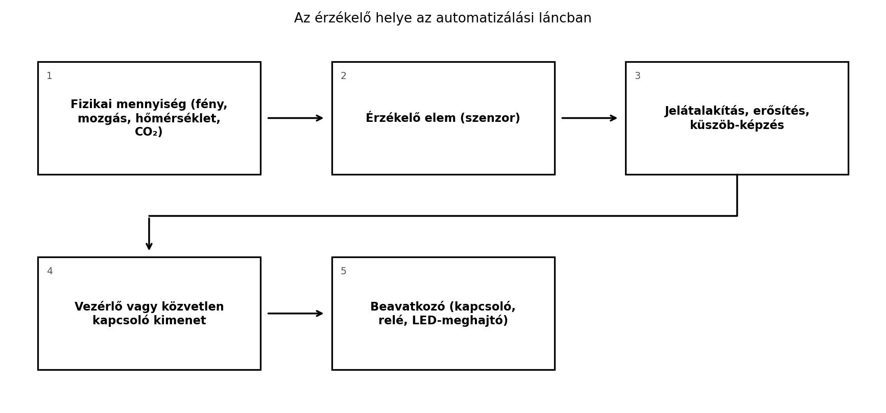

Statikus változat (mint a PDF-ben)
Egy családi ház udvari világítását úgy szeretnéd beállítani, hogy alkonyatkor magától kapcsoljon be, de csak akkor, ha valaki a kocsibeállón mozog. Napközben egyáltalán ne égjen a lámpa, mert a tulajdonos szerint pazarlás lenne. Ha a mozgás megszűnt, a lámpa még maradjon bekapcsolva két percig, hogy a lakó beérjen az ajtóig.
Ehhez két érzékelőt kell összehangolnod: egy fényérzékelőt, amely a sötétedést érzékeli, és egy mozgásérzékelőt, amely a területen belüli embert vagy járművet. Ugyanez a gondolatmenet vezet a társasházi lépcsőházak, a kávézók mosdói, az irodai tárgyalók vagy a hűtőházak automatizálásáig is. Az érzékelő az épület „szeme és füle”, a beavatkozók – például mágneskapcsolók, relék, LED-meghajtók – pedig a „keze”. Ebben az alfejezetben az érzékelők oldalát tanulod meg: hogyan működnek, hogyan választasz közülük, hová telepítsd, és hogyan állítsd be őket, hogy ne legyen téves bekapcsolás vagy bosszantó kimaradás.
Egy épületautomatikai rendszerben az érzékelő nem önmagában dolgozik: jelet ad egy vezérlőnek vagy közvetlenül egy beavatkozónak. Például egy szabadon álló mozgásérzékelős reflektorban a szenzor, a vezérlőelektronika és a kapcsolórelé egyetlen házban van. Egy KNX-rendszerben viszont az érzékelő a buszra küld táviratot, és a döntést egy másik eszköz hozza meg.

A gyakorlatban ezért az érzékelő kiválasztásakor mindig a teljes láncot kell nézned: milyen terhet kapcsol, milyen feszültséggel működik, milyen a kimenete, és hogyan viselkedik áramkimaradás után.
A fotoellenállás (LDR, Light Dependent Resistor) olyan félvezető rétegből készült alkatrész, amelynek ellenállása erős megvilágításban lecsökken, sötétben pedig megnő. Régebbi kivitelben kadmium-szulfid (CdS), újabb berendezésekben környezetbarát anyagok is lehetnek (ellenőrizendő: aktuális RoHS-korlátozások). Az LDR nem ad ki feszültséget, hanem az ellenállásváltozását használjuk fel egy feszültségosztóban vagy komparátor bemenetén.
Szabály. Egy tipikus szürkületkapcsoló jelkondicionálása: az érzékelőt egy ellenállással feszültségosztóba kötik, és az osztópont feszültségét hasonlítják egy beállított küszöbfeszültséghez. Ha nappalból estébe megyünk, az LDR ellenállása nő, az osztópont feszültsége pedig áthalad a küszöbön, és a készülék kapcsol.
A fotoellenállás előnye az olcsósága és az egyszerű elektronikája, hátránya a lassabb reakció, a nagy szórás és az, hogy a kapcsolási küszöb hőmérsékletfügghet. Pontos fényméréshez vagy gyors fényjel-átvitelhez ezért más érzékelőt válassz.
A fotodióda fény hatására záróirányú áramot ad; ez az áram közel arányos a megvilágítással, és gyorsan változik. A fénytranzisztor a fotodióda áramát tranzisztorral erősíti, ezért nagyobb jelszintet ad, de valamivel lassabb. A gyakorlati szerelő számára ezek nem alkatrészszinten, hanem kész érzékelők formájában jelennek meg: fénysorompó, fénymérő, világításszabályozó érzékelő, jeladó.
Továbbvitt eredmény. Az érzékelő mint jeladó és a beavatkozó kapcsolatát a Beavatkozók: mágneskapcsolók, szelepek, szervomotorok alfejezetben használjuk fel: ott azt nézzük meg, milyen jelszintet kell az érzékelő kimenetének szolgáltatnia ahhoz, hogy a beavatkozót megbízhatóan vezérelje.
A szürkületkapcsoló (twilight switch) fotóérzékelőt, komparátort és kimeneti kapcsolót tartalmazó készülék. Beállítható küszöbértéke luxban van megadva, például 2–100 lx. A kikapcsolás és a bekapcsolás küszöbe között hiszterézis van, hogy felhős égbolt vagy elhaladó fényszóró ne okozzon villódzást.
Példa. Egy szürkületkapcsoló beállítási tartománya 3–80 lx, késleltetése bekapcsolásnál 10 s, kikapcsolásnál 30 s. A beállított érték 20 lx. Ez azt jelenti, hogy amikor a fényerő 20 lx alá esik, a készülék vár 10 másodpercet, majd bekapcsol; ha a fényerő 20 lx + hiszterézis fölé emelkedik, 30 másodperc múlva kapcsol ki. A késleltetés azt akadályozza meg, hogy egy rövid árnyék vagy egy éjszakai autó fényszórója zavarja a működést.
A szürkületkapcsoló érzékelőjét lehetőleg északi égbolt felé néző, árnyékos helyre szereld, ne közvetlen napfényre vagy a vezérelt lámpa fényébe. Ha a lámpa az érzékelőt is megvilágítja, a rendszer öngerjesztő villódzásba kezdhet: a lámpa bekapcsol, a fényhatás miatt a kapcsoló kikapcsol, a sötét miatt újra bekapcsol, és ez így ismétlődik.
A PIR mozgásérzékelő (passive infrared) a mozgó, meleg testek hősugárzását érzékeli. Az emberi test felszíne körülbelül 9–10 µm hullámhosszú infravörös sugárzást bocsát ki; a PIR érzékelő erre a tartományra érzékeny. A PIR látómezejét optikai lencse, általában Fresnel-lencse osztja zónákra. Ha egy meleg tárgy az egyik zónából a másikba lép, az érzékelő jelet ad.
Definíció. A PIR érzékelő olyan passzív infravörös szenzor, amely a látómezőjében mozgó, a környezeténél melegebb testeket a zónák közötti jelváltozás alapján érzékeli. „Passzív”, mert maga nem sugároz ki semmilyen jelet, csak érzékel.
Egy falra szerelhető, kültéri PIR felépítését az alábbi ábra mutatja. Az (a) oldalmetszeten az 1 Fresnel-lencse sok kis szegmensből áll, ezek osztják zónákra a látómezőt; a 2 piroelektromos érzékelőelem a lencse fókuszában ül, jelét a 3 kiértékelő elektronika dolgozza fel, és a 4 kimeneti relé kapcsol. A 6 csuklós tartóval a látómező dőlése és iránya állítható, a 9 ablak mögött a beépített szürkületérzékelő van, a kábel a 8 bevezetésen át alulról érkezik. A (b) részen a fedél alatti 10 beállítók (LUX: fényküszöb, TIME: utánfutási idő, SENS: érzékenység) és a 11 kapocsléc (L, N és a kapcsolt L’ kimenet) láthatók.
A beállítók jelölése és a kapocskiosztás gyártófüggő, a készülék bekötési rajza a mérvadó; a PE nem az érzékelőn át, hanem közvetlenül a lámpatesthez fut. A HTML-kiadásban a részekre mutatva a szerepük olvasható.
A PIR tipikusan 5–12 m távolságra, nagyjából 90–180°-os látószögben érzékel. A legérzékenyebb mozgásirány a zónákat keresztülmetsző irány; a feléjük vagy tőlük távolodó mozgás kevésbé vált ki jelet.
Hiba. A PIR-t úgy szerelték, hogy a látómezőjét egy meleg levegős radiátor, klíma vagy légfüggöny „látja”. Az érzékelő akkor is kapcsolhat, ha ember nincs a helyiségben. Helyes gyakorlat: a látómezőt a hőforrásoktól elfordítani, és az érzékelőt a huzat irányából kitakarni.
Az elhelyezés szabályait az alábbi négy kép foglalja össze. Az (a) oldalnézeten a szerelési magasság gyártói adat; a látómezőt a tartóval úgy döntjük, hogy az érzékelési tartomány (tipikusan 5–12 m) vége a kívánt helyre essen. A (b) felülnézet a zónákat mutatja: a zónákat keresztező mozgás erős, az érzékelő felé haladó gyenge jelet ad, ezért az érzékelőt úgy helyezzük el, hogy a valószínű mozgást keresztben fedje. A (c) kép a fenti hibát mutatja: a radiátor meleg légárama a látómezőben téves kapcsolást okoz. A (d) kép a mennyezeti jelenlétérzékelőt (lásd lent): magasabbra szerelve nagyobb a padlón az érzékelési kör, de kisebb az érzékenység.
A HTML-kiadásban a négy nézet egyenként is megjeleníthető. A beállításnál ezért sétálunk keresztbe a látómezőn, és nem egyenesen az érzékelő felé (lásd a gyakorlati útmutató 6. lépését).
A mikrohullámú jelenlétérzékelő nagy frekvenciájú elektromágneses jelet bocsát ki, és a visszaverődés Doppler-eltolódását értékeli. A mozgó tárgy által visszavert jel frekvenciája eltolódik; az érzékelő ebből mozgást érzékel. Két fontos tulajdonsága van: áthatol nem fémes akadályokon (például faajtón, gipszkartonon, üvegen), és nagyon érzékeny, ezért a mozdulatlan embert is érzékelheti, ha apró légzési vagy mozgási jelet ad.
Szabály. A mikrohullámú érzékelőt akkor válaszd, ha:
A nagyobb érzékenységért cserébe a mikrohullámú érzékelő több téves kapcsolást okozhat, ha rosszul állítod be. Nem fém ajtó mögül, hanem a ténylegesen figyelendő tér felé kell irányítani, és a tartományát a szükséges értékre kell csökkenteni. Általában van érzékenység- és tartományszabályzó, valamint a teszteléshez rövid késleltetésű üzemmód.
A jelenlétérzékelő (presence detector) olyan mozgásérzékelő, amely nem csak a nagyobb mozgást, hanem az apró, munka közbeni mozgást is érzékeli, és nagyobb érzékenységgel, finomabb zónabontással dolgozik. Irodai tárgyalókban, tantermekben, mosdókban arra használják, hogy a világítást mindaddig bekapcsolva tartsa, amíg valaki a helyiségben van, akkor is, ha az illető hosszabb ideig mozdulatlanul ül.
A szerelő szempontjából a fő különbség az, hogy a jelenlétérzékelő kimenete gyakran buszjel vagy 0–10 V-os/relés jel, és az érzékenységet a helyiség méretéhez, a tartózkodási zónához kell hangolni. A mennyezetre szerelt jelenlétérzékelő látómezeje kúpos; a padlón lévő érzékelési kör átmérője nő, ha magasabbra szereled, de ugyanakkor az érzékenység a távolsággal csökken.
Az épületautomatikában leggyakrabban ellenállás-hőmérőt (Pt100, Pt1000) vagy NTC-termisztort (negatív hőmérsékleti együtthatójú ellenállást), illetve félvezetős digitális érzékelőt találsz. A Pt100 0 °C-on 100 Ω ellenállást mutat, és 100 °C-on körülbelül 138,5 Ω-ot; a Pt1000 ennek a tízszerese. A termisztor nagyobb érzékenységű, de nemlineáris, ezért a készülék jelfeldolgozója linearizálja.
Szabály. Az érzékelőt úgy helyezd el, hogy a helyiség tényleges levegőhőmérsékletét mérje, ne pedig a fal hőmérsékletét vagy a fűtőtest közvetlen hősugárzását. Falra szerelt szobaérzékelőnél:
A két leggyakoribb elhelyezési hibát – a lámpát „látó” szürkületérzékelőt és a rossz helyre tett szobai érzékelőt – az alábbi helyes/hibás párok mutatják. Az 1. képen a szürkületérzékelő a vezérelt lámpa fénykúpjában van, ezért villódzik; a 2. képen az eresz alatt, a lámpa fölött, árnyékban, északi égbolt felé néz. A 3. képen a szobai érzékelő radiátor fölött, napsütésben és függöny mögött van, a 4. képen belső falon, szabad légáramlásban, a gyártói ajánlás szerinti magasságban.

Mindkét hiba a beüzemeléskor még rejtve maradhat: a szürkületérzékelőé csak sötétedéskor, a szobai érzékelőé a fűtési idényben vagy napsütésben jelentkezik. A HTML-kiadásban a négy kép egyenként léptethető.
A relatív páratartalom (RH) érzékelése kapacitív érzékelővel történik: a nedvesség hatására a szigetelőréteg dielektromos állandója megváltozik, ami a kapacitás mérhető változását okozza. Az érzékelő a hőmérsékletet is méri, mert a relatív páratartalom csak a hőmérséklettel együtt értelmezhető. Fürdőszobában, konyhában, pincében vagy medencehelyiségben a helyi páraérzékelő gyakran közvetlenül egy ventilátort vezérel, vagy a szellőztető rendszernek ad jelet.
A CO₂-érzékelő a levegő szén-dioxid-koncentrációját méri ppm-ben. Az épületautomatikában leggyakrabban NDIR (nem diszperzív infravörös) elven működik: a CO₂-molekula elnyeli az infravörös fény egy meghatározott hullámhossz-tartományát, ebből következtet a koncentrációra. Az iskolai tantermekben, irodákban, tárgyalókban a CO₂-érzékelő a frisslevegő-befúvást vezérli, és a világításhoz hasonlóan a jelenlétfüggő szellőztetést teszi lehetővé.
Figyelem. A CO₂-érzékelő nem szén-monoxid-érzékelő! A CO (szén-monoxid) égésből származó mérgező gáz, és teljesen más érzékelő elven működik. A fűtőberendezés mellé CO-érzékelőt kell tenni, nem CO₂-érzékelőt.
Az érzékelők telepítési hibái sokszor nem azonnal, hanem csak az első téves kapcsolásnál vagy a felülvizsgálatnál derülnek ki. A leggyakoribb hibák: rossz irányba állított vagy hőforrás felé fordított érzékelő, a lámpa fényét látó szürkületérzékelő, túl nagy érzékenység. A beállítás sorrendje mindig: fényküszöb, majd érzékenység, végül késleltetési idő (részletesen a gyakorlati útmutatóban, a tipikus hibákat az alfejezet „Tipikus hibák” szakasza sorolja fel).
Szabvány. Az épületautomatikai érzékelők szerelése és csatlakoztatása a kisfeszültségű villamos berendezésekre vonatkozó MSZ HD 60364 sorozat hatálya alá tartozik, tipikusan az áramkörök kialakítása, a vezetékezés és az érintésvédelem szempontjából. Az automatizálási eszközök közötti kommunikációra a gyártói rendszerszabványok, például a KNX és a DALI esetén a rendszerleírások vonatkoznak. A pontos típusjeleket, tűréshatárokat és a készülékek minősítését mindig a gyártói adatlap alapján kell ellenőrizni (ellenőrizendő: aktuális szabványkiadás és terméktanúsítás).
Megjegyzés. A DALI és KNX protokollok érzékelői buszra küldik az adatot, így a hagyományos „érzékelő-kapcsoló” funkciók szoftverben is beállíthatók. A DALI szabványosítja az érzékelők és beavatkozók együttműködését, míg a KNX rendszerben az érzékelők és beavatkozók a helyi buszon kommunikálnak. A részleteket a KNX, DALI és más épületautomatikai rendszerek alfejezetben tanulod.
Egy társasház belső lépcsőházában a tulajdonos azt kérte, hogy a világítás alkonyatkor és mozgásra kapcsoljon, de éjszaka ne teljes, hanem csökkentett fényerővel. A szerelő egy kombinált készüléket épített be: a lépcsőház ablaka mellett elhelyezett szürkületérzékelő adta a sötétedés feltételt, a mozgásérzékelő pedig a lépcsőre irányult. A kimenet két fényerőt kapcsolt: erős fényt a mozgás pillanatában, majd 30 másodperc után csökkentett fényt. A rendszer az első télen tévesen kapcsolt: kiderült, hogy az érzékelő a radiátor légáramlását érzékelte. Az áthelyezés és a látómező átállítása megszüntette a hibát.
A tanulság: egy érzékelő csak akkor működik jól, ha a telepítési helye a fizikai működés elvének is megfelel, nem csak a bekötési rajznak.
Cél. Egy udvari LED-reflektort vezérlő kombinált érzékelő beállítása úgy, hogy nappal ne kapcsoljon, este mozgásra kapcsoljon, és a mozgás megszűnése után 2 percig égjen.
Eszközök és anyagok.
Biztonsági korlát. A feladat tanműhelyi (törpefeszültségű) környezetre vagy jogosult oktató felügyeletére vonatkozik; hálózati feszültségen önállóan ne végezd. Az éles szerelést csak jogosult személy végezheti.
Bekötési rajz. A háromvezetékes érzékelő (kapcsai: L, N és a kapcsolt L’ kimenet) a leggyakoribb hibaforrás: a kapcsolt kimenet a fázist kapcsolja a lámpatestre, a nulla és a védővezető közvetlenül a lámpatesthez fut. Hibás, ha az N kerül a kimenetre, vagy ha a nullát kapcsolja az érzékelő.

A rajzon az F1 kismegszakító után a fázis a B1 érzékelő L kapcsára jut. Az érzékelő elektronikája L és N között kap tápot, a belső relé-érintkezője zárja az L–L’ utat; az L’ kimenet az E1 reflektoron át az N-re zárul. A PE az érzékelőn nem halad át, a reflektor fém testére fut. Az S1 kapcsoló (ha van) a relével párhuzamosan, kézzel kapcsolja be a lámpát.
Ellenőrzési pontok.
1. feladat (A). Fogalmazd meg egy mondatban, mi a lényegi különbség a PIR és a mikrohullámú mozgásérzékelő között.
2. feladat (A). Egy szürkületkapcsoló 20 lx alatt kapcsol be, és a kioldási hiszterézise 5 lx. Mekkora a kikapcsolási fényerő?
3. feladat (B). Egy PIR érzékelőt 2,5 m magasra szerelnek, és a padlón körülbelül 6 m átmérőjű körben érzékel. A folyosón a 4 m-nél távolabb lévő ajtón ki-be járók ne kapcsolják a lámpát. Milyen beállítási (érzékenység, maszkolás/takarólap) és tesztelési lépéseket tennél?
4. feladat (B). Rajzolj egy kapcsolási vázlatot, amelyen egy szürkületkapcsoló egy LED-reflektort vezérel. Jelöld a fázist, a nullát és a védővezetőt, valamint az érzékelő terheléskimenetét.
5. feladat (C). Egy tárgyalóban a világítás akkor is lekapcsol, ha az ülő emberek hosszabb ideig mozdulatlanul dolgoznak. Milyen érzékelőt válassz, és milyen beállításokkal oldanád meg?
6. feladat (D). Egy udvari szürkületkapcsolós lámpa éjszaka 2 percenként ki- és bekapcsol. Sorold fel a lehetséges okokat, és mindegyikhez adj hibafeltárási mérést vagy megfigyelést.
Önellenőrzés – válaszok
Feladatok – megoldások
1. feladat. A PIR a meleg testek infravörös sugárzását érzékeli passzívan, a mikrohullámú érzékelő pedig saját nagyfrekvenciás jelének Doppler-eltolódását méri aktívan, és nem fémes akadályokon is áthatol.
2. feladat. A kikapcsolási küszöb 20 lx + 5 lx = 25 lx. A bekapcsolás 20 lx alatt történik, a kikapcsolás 25 lx fölött.
3. feladat. A 6 m átmérő 3 m sugarú érzékelési kör; , az ajtót a névleges lefedés nem éri el. A szélső zónák érzékenysége azonban a szerelési magasság és a lencse függvénye, ezért az érzékenységet csökkentjük, vagy takarólappal szűkítünk. Sétapróbával ellenőrizzük, hogy 3 m-en belül kapcsol, a 4 m-es ajtónál nem. Ezután a késleltetést is tesztelni kell.
4. feladat. Egyvonalas ábrán: az L1 fázis a szürkületkapcsoló L kapcsára, a kapcsoló terheléskimenete a lámpára, a lámpa nullája az N-re, a PE vezető a lámpa testére. Az érzékelő saját tápfeszültségét is az L és N közé kell kötni. A kapcsolási rajzon az érzékelőt mint kapcsolót jelöljük, a terhelése a lámpa. A megoldás rajza megegyezik a gyakorlati útmutató bekötési rajzával (S1 nélkül): ott az érzékelő L, N és L’ kapcsa, a reflektor és a PE bekötése is látható.
5. feladat. Jelenlétérzékelőt kell választani, amelyik mikrohullámú vagy finomabb PIR zónákkal dolgozik. A késleltetést 15–30 percre állítjuk, az érzékenységet a tárgyaló asztal körüli zónára irányítjuk, és beállítjuk, hogy a mozgás megszűnése után a lámpa ne azonnal kapcsoljon ki. Ha szellőztetés is van, a jelenlétérzékelő azt is vezérelheti.
6. feladat. Lehetséges okok:
Az épületautomatikai érzékelők a fizikai mennyiséget – fény, mozgás, jelenlét, hőmérséklet, nedvesség, CO₂ – villamos jellé alakítják, amely tovább vezérli a beavatkozókat. A fényérzékelők közül a fotoellenállás egyszerű, a fotodióda gyors és pontos, a szürkületkapcsoló készülékben foglalt megoldás. A PIR mozgásérzékelő passzív infravörös zónaváltozást érzékel, a mikrohullámú érzékelő aktív radarelvet használ, a jelenlétérzékelő apró mozgásokat is érzékel. A hőmérséklet-érzékelő Pt100, Pt1000 vagy termisztor alapú lehet, a páratartalom kapacitív elven, a CO₂ jellemzően NDIR elven működik. A telepítésnél figyelni kell a hőforrásokra, a fényforrásra, a látómezőre és a beállításokra (küszöb, hiszterézis, késleltetés). Továbbvitt eredmény: az érzékelők kimeneti jelét és csatlakoztatását a Beavatkozók: mágneskapcsolók, szelepek, szervomotorok alfejezetben használjuk fel, a hálózatba kötés szempontjából pedig a KNX, DALI és más épületautomatikai rendszerek alfejezet tárgyalja a rendszerszintű integrációt.
A leírás a klasszikus érzékelői működési elveket tartalmazza, amelyek stabil fizikai ismeretek, de a konkrét terméktípusok, lux-értékek, érzékelési távolságok és a szabványhivatkozások pontos kiadása ellenőrzést igényel. A gyártói adatlapokon szereplő tűréshatárok, beépítési magasságok és kapcsolási küszöbök mindig az adott készülékre vonatkoznak (ellenőrizendő: aktuális gyártói adatlapok és szabványkiadások).